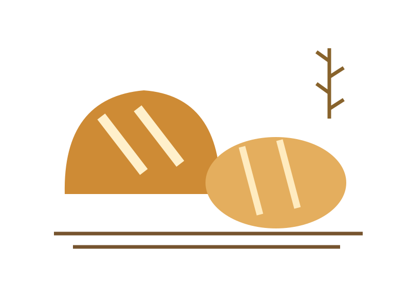

Friday evening
Mix a small preferment if your recipe uses one. Weigh ingredients and leave the work surface ready.
PrepareA practical baking table: a few reliable doughs, a clear plan and enough time for the dough to tell you what comes next.

Mix a small preferment if your recipe uses one. Weigh ingredients and leave the work surface ready.
PrepareMix, rest and fold. Watch the dough’s strength and expansion rather than only the clock.
MakeShape, proof and bake according to a tested recipe. Cool completely before slicing.
Share